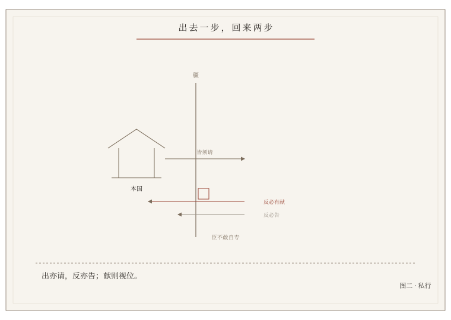

曲礼下 · 二·三十五 · 第 158 课
大夫因私事出国境，必先请；回来必有献。士因私事出疆，必先请；回来必告。注「臣不敢自专也」。大夫有献，士只告，此其别。
说什么事：大夫私行，出疆必请，反必有献；士私行，出疆必请，反必告。
落在哪一层：礼，兼及礼意。同一件私事，出入两端各有其仪，而大夫与士在「反」处分开。
为何编在此位：上节论献与对，此节论私行之请与反。出入之际，见臣之分。
【经】大夫私行，出疆必請，反必有獻。士私行，出疆必請，反必告。
【注】臣不敢自專也。私行，謂以己事也。士言告者，不必有其獻也，告反而已。
【疏】「私行」谓非为君行也。「疆」，界也。既非公事，故宜必请也。然大夫无外交，而此有私行出界，或是新来大夫，姻娅犹在本国，故有私行往来，但不得执交于外耳。「反必有献」者，大夫有德，必能招人饷遗，故还必有献。有献由德，亦示君知贤无异志。「士私行出疆，必请」者，出与大夫同也。「反必告」者，还与大夫异也。士德劣，故不必有献，但必知还而已。
私行 注「谓以己事也」。非为君出行。
出疆 疆，界也。越出国境。
请 先请于君。注「臣不敢自专」。
反 同「返」。回来。
献 有所奉于君。
告 告归而已。注「不必有其献也」。
大夫因私事出行，出疆必先请命，回来必有奉献。士因私事出疆，必先请命，回来只须告归。
此节把「私」与「公」的界线画在两个字上：请、献。请是出去之前的一步，献是回来之后的一步。士在回来的那一步上减为一「告」——不是士可慢，是士无可献。
第一层 私亦须请 私事不是己事就可以自专。疏「既非公事，故宜必请也」。请的意义，是承认自己仍在君的分内。
第二层 大夫无外交 疏辨「大夫无外交，而此有私行出界」。此节所许，是人伦之私（姻娅在本国），不是结交外邦。礼的宽容有边界。
第三层 反必有献 疏「大夫有德，必能招人饷遗，故还必有献」。献不是纳贡，是证明自己这一趟没有别的意思——「示君知贤无异志」。
第四层 士告而不献 疏「士德劣，故不必有献，但必知还而已」。位低则所责轻。礼的等差，在责不在礼。
与今日何干 出差先报，回来销差。带不带手信，看位置；销不销假，一律。
| 左 | 右 |
|---|---|
| 大夫私行，出疆必请 | 私亦不敢自专 |
| 反必有献 | 示君知贤无异志 |
| 士私行，出疆必请 | 出与大夫同 |
| 反必告 | 还与大夫异 |
| 士不必有献 | 位低则责轻 |
| 大夫无外交 | 所许者人伦之私 |
画一道竖向界线，线左一座小屋，线右一片空旷。以小屋顶为起点画两条等长的向右箭头，跨过界线、落在线右同一处（示意大夫与士出疆皆须请）；再自该处画两条向左的回箭头：一条回到小屋之前、线上加一枚小方块（示意大夫反必有献），另一条只回到界线之内、无方块（示意士反必告）。两条回箭头上下错开。不写文字。赭色只用在线上那枚小方块上。
